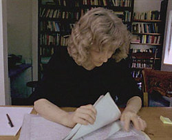

|
|
||
 Researching the life of Martha Ballard took Laurel Ulrich into thousands of surviving records. Piecing together what she discovered in the archives with the minutiae in Martha Ballard's massive diary required many years. And then, Ulrich says, the act of writing articles and chapters of the book "was also an act of discovery." |
You can read: Ulrich's 1981 grant application to do a two-month research project project with Martha Ballard's diary. She had no idea at that point that the project would take the next eight years of her life. What DID she think at that point? Ulrich's 1991 Bancroft Prize Acceptance Speech in which she reflects on Martha's diary, her own diary, and her process of writing A Midwife's Tale. An Interview with Ulrich about her research methodology, her process of writing, social history, our views of women in the past, the difficulty of placing women in a larger political context, and her own family's reactions to "living with Martha." |
|
|